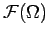
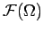
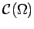
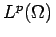

Inhalt Index DeskTop Bronstein

 Funktionalanalysis Nichtlineare Operatoren Beispiele nichtlinearer Operatoren
Funktionalanalysis Nichtlineare Operatoren Beispiele nichtlinearer Operatoren


Seien  meßbar und eine Funktion von drei Variablen, dann heißt der nichtlineare Operator auf 
meßbar und eine Funktion von drei Variablen, dann heißt der nichtlineare Operator auf 
URYSOHN-Operator. Erfüllt der Kern K die entsprechenden Bedingungen, dann ist ein stetiger und kompakter Operator in  bzw. in .